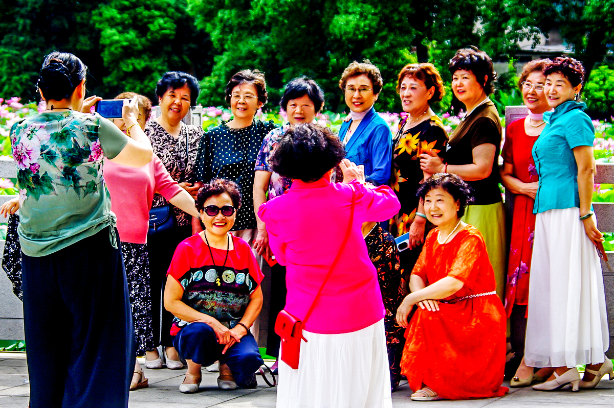

（手机请横屏观看）
摄影班安排去雨山湖公园北门莲湖采风。当日阴霾天气，天空辐射较强散射光，现场抓拍景物照片多带有较多灰蒙蒙影调，需要通过后期调整进行一定程度补救。

为更好地营造欢快活跃的老同志们摄影采风活动场面，利用老同志合影时抓拍的那张照片在AI帮助下生成了一段视频。要求AI视频中老同志们互动微笑，向镜头招手致意；要求人物相互交流自然流畅，表情准确生动，欢声笑语，气氛活跃；镜头不推进不横移。生成的视频总体看达到了要求的效果。（手机横屏观看，可点击操作菜单使用全屏播放并打开声音）